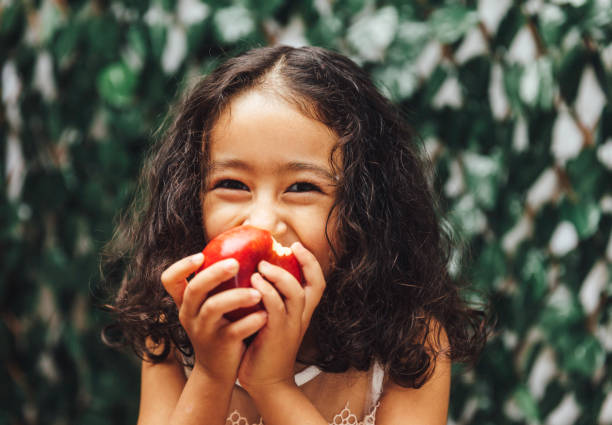

This website is essentially about foods. I will share on this page, the best dishes, snacks, drinks, desserts... i've tried, and loved that I think you should try at least once in your life.
I will also share with you some addresses of restaurants where you can taste these dishes and their recipes if you wish to cook them yourself.